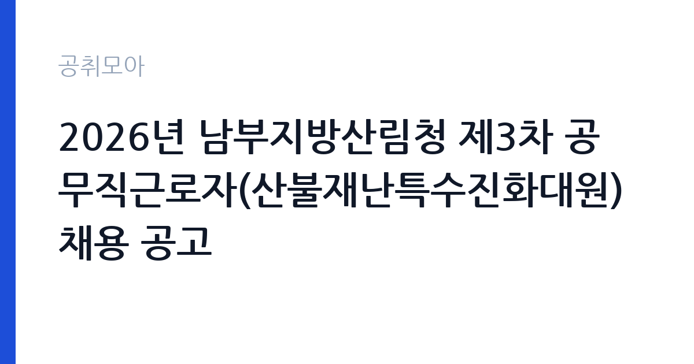

[국가기관] 2026년 남부지방산림청 제3차 공무직근로자(산불재난특수진화대원) 채용 공고
산림청 남부지방산림청 · 경북 · 마감 2026-10-29 (D-8) · 출처 나라일터

한눈에 보는 모집 조건
| 기관 | 산림청 남부지방산림청 |
|---|---|
| 공고명 | 2026년 남부지방산림청 제3차 공무직근로자(산불재난특수진화대원) 채용 공고 |
| 고용형태 | 공무직 |
| 근무지 | 경북 |
| 게시일 | 2026-10-22 |
| 마감일 | 2026-10-29 (D-8) |
지원자격, 이렇게 읽으세요
- 공무직 4명
- 접수 ~2026-10-29 마감
- 세부 조건은 원문 공고문 확인
공무직 근로자는 공무원이 아니라 근로기준법이 적용되는 근로자이지만 기간의 정함이 없는 무기계약으로 채용되는 경우가 많아 정년까지 근무가 가능합니다. 채용은 공무원 시험과 달리 기관의 자체 전형으로 진행되고 인사 규정과 임금표를 적용받습니다. 이번 공고는 산림청 남부지방산림청에서 직접 진행하는 자체 전형으로, 응시자격과 제출서류는 공고문에 항목별로 제시됩니다. 산불 대응 직무는 체력과 건강 상태를 가장 중요하게 봅니다. 등짐 장비를 메고 산을 오를 수 있어야 하므로, 채용 단계에서 체력검정이나 신체검사를 실시하는 경우가 많습니다. 운전면허 소지자를 우대하거나 필수로 요구하는 공고가 일반적입니다. 산림 관련 자격이나 학과 전공은 우대 사항이며 필수는 아닙니다. 결격사유와 연령 기준은 공고문에 명시되어 있으므로 원문을 확인해야 합니다. 서류는 접수 마감 이후 보완이 되지 않으므로 자격 요건과 증빙 서류를 마감 전에 모두 갖춰야 합니다. 공고문에 명시된 우대 사항은 해당 여부를 확인해 증빙을 첨부해야 가점이 반영됩니다. 응시 자격 판단이 애매하다면 접수 전에 채용 담당 부서로 문의하는 편이 안전합니다. 서류 제출 후에는 소명 기회가 없습니다.
이 공고의 포인트
이 공고의 첫 번째 포인트는 고용 형태입니다. 무기계약으로 채용되면 정년까지 근무가 가능해 재계약 부담이 없습니다. 반대로 기간제로 채용되는 공고라면 계약 기간을 먼저 확인해야 합니다. 두 번째는 업무 범위가 명확하다는 점입니다. 산불 대응 직무로 채용되므로 배치 이후 담당 업무가 크게 흔들리지 않습니다. 세 번째는 근무지입니다. 경북 지역 근무로 수도권 공고에 비해 지원자 분포가 넓지 않아 상대적으로 경쟁이 분산되는 경우가 있습니다. 처우와 근무 형태가 표로 정리되어 있어 비교해 보기에 편한 공고입니다. 같은 직무로 함께 올라온 공고 가운데 접수 마감이 가장 늦은 편이라 준비 시간을 상대적으로 확보할 수 있습니다. 다만 선발 인원이 4명으로 많지 않아 자격을 갖춘 지원자가 몰리면 경쟁률이 높아질 수 있습니다.
전형은 어떻게 진행되나
채용 절차는 공고문에 안내된 순서대로 진행되며, 서류 접수 마감 후에는 추가 접수나 서류 보완이 이뤄지지 않는 것이 원칙입니다. 서류심사에서는 응시자격과 제출서류의 형식 요건을 기계적으로 확인하므로, 경력 증명서의 기간과 직무 내용이 공고의 요건과 정확히 맞아야 합니다. 면접은 지원자 수에 따라 집단면접과 개별면접으로 나뉘고, 직무 관련 질문과 상황 대응 질문이 함께 나옵니다. 합격자 발표는 개별 통보 또는 홈페이지 게시로 이뤄지며 이후 임용 절차가 진행됩니다. 결과 발표는 문자와 이메일로 동시에 이뤄지지 않는 경우가 있어 두 경로를 모두 확인하십시오.
이런 분께 추천해요
- 장시간 산행과 중량 장비 운반이 가능한 체력을 가진 분
- 야간·휴일 현장 투입에 동의할 수 있는 분
- 지시 체계와 안전 수칙을 지키는 것을 우선하는 분
지원 전 체크리스트
- 응시자격 요건과 경력 기준을 충족하는가 — 경력은 증명서로 입증해야 합니다
- 무기계약 여부와 정년 기준을 공고문에서 확인했는가
- 제출서류 목록을 모두 준비했는가 — 누락 시 서류 단계에서 탈락합니다
- 접수 마감 2026-10-29 이전에 접수 방식을 확인해 제출했는가
모집 일정과 제출 타이밍
접수 마감은 2026-10-29이고 공고는 2026-10-22에 게시되었습니다. 준비 기간 7일 안에 서류 작성, 증빙 발급, 접수를 모두 마쳐야 하므로 주말을 포함해 일정을 미리 나누는 것이 좋습니다. 특히 경력 기술서나 직무수행계획서를 요구하는 공고는 작성에 시간이 걸리므로 첫날 초안을 잡으십시오. 서류 합격자 발표와 면접 사이 간격이 짧은 경우가 많아 면접 예상 질문은 서류 제출 전에 정리해 두는 편이 유리합니다. 마감 직전에는 접속이 몰리므로 여유를 두고 제출하십시오. 서류 발표일과 면접일 사이가 짧은 경우가 많아 면접 준비는 접수와 동시에 시작하는 편이 좋습니다. 경북 근무지는 시설 간 거리가 멀어 이동 시간을 넉넉히 잡아야 합니다. 마감까지 일주일 안팎이 남아 서류 준비와 증빙 발급을 병행해야 합니다. 선발 인원이 소수라 면접에서 변별력이 크게 작용하는 전형입니다.
직무 이해하기: 국가기관
산림청과 지방산림청은 산림 보호와 산불 대응, 산림 자원 관리를 맡는 중앙행정기관입니다. 지방산림청은 국유림을 관리하며 산불 진화와 병해충 방제, 사방 사업을 수행합니다. 산불조심기간에는 현장 인력이 대기 체계로 운영되고 발생 시 즉시 출동합니다. 산불 대응 업무는 산림 지역에서 발생한 불을 직접 끄고, 불이 번지지 않도록 방어선을 만드는 일입니다. 진화 호스와 등짐펌프, 기계톱 같은 장비를 들고 산을 오르며 작업하고, 야간 산불에도 투입됩니다. 불이 꺼진 뒤에는 잔불을 찾아 정리하고, 산불 원인 조사와 감시 활동을 지원합니다. 산불조심기간에는 대기 근무와 순찰이 늘어나고, 봄철과 가을철에 업무가 집중됩니다. 체력과 안전 수칙 준수가 업무 수행의 전제입니다. 업무는 혼자 처리하기보다 부서 단위로 나눠 진행되므로 담당 구역과 협업 범위를 입사 초에 확인하는 것이 중요합니다. 업무 매뉴얼과 지침이 문서로 정리되어 있어 절차를 익히면 반복 업무는 빠르게 손에 붙습니다.
자기소개서 작성 팁
자기소개서에서는 체력과 위험 감수 태도를 구체적인 경험으로 증명해야 합니다. 등산·마라톤·군 복무처럼 장시간 신체 활동을 지속한 경험을 수치와 함께 쓰십시오. 산불 진화는 개인기가 아니라 팀 작업이므로, 공동 작업에서 역할을 맡았던 사례가 효과적입니다. 위험을 무시하는 듯한 표현은 감점 요인이 되므로, 규칙과 절차를 지킨다는 점을 분명히 밝히십시오. 문항별 글자 수 제한을 먼저 확인하고, 각 문항의 첫 문장에 결론을 배치하는 방식이 읽기 쉽습니다. 지원 동기는 기관의 어떤 사업에 기여하겠다는 한 문장으로 시작하고, 이어서 본인의 경험을 근거로 붙이십시오. 감점을 피하려면 다른 기관에 보낼 수 있는 범용 문장을 그대로 쓰지 않는 것이 중요합니다. 기관 이름과 사업명이 문장 안에 자연스럽게 들어가야 준비도가 드러납니다.
면접 준비 포인트
면접에서는 위험 상황에서의 판단과 팀워크를 봅니다. 불길이 바뀌었을 때 어떻게 대응할지, 지시와 현장 상황이 다를 때 어떻게 할지, 장시간 야간 작업을 감당할 수 있는지 묻습니다. 안전 장비 착용과 보고 체계를 먼저 언급하면 신뢰를 얻을 수 있습니다. 산행이나 등산 경험, 체력 관리 방식도 소재가 됩니다. 답변은 상황, 판단, 조치의 순서로 정리하면 전달이 분명해집니다. 모르는 질문에는 모른다고 밝히고 확인 방법을 제시하는 편이 억지 답변보다 낫습니다. 마지막에는 근무 의사와 함께 2026-10-29 이후 일정에 언제든 응할 수 있다는 점을 전달하십시오. 면접은 공고문에 적힌 직무 내용을 얼마나 이해하고 있는지 확인하는 질문으로 시작하는 경우가 많으니, 모집분야 문구를 그대로 읽어 두는 것이 도움이 됩니다.
급여·근무조건 읽는 법
산불재난특수진화대원은 공무직 근로자로 채용되는 경우 산림청 공무직 임금표를 준용하며, 기본급에 정액급식비·명절휴가비·복지포인트·초과근무수당이 더해집니다. 산림청 보도자료(2024년)에 따르면 정액급식비 월 14만 원, 명절휴가비 연 132만 원, 복지포인트 연 50만 원 수준의 수당이 지급되고 처우개선비도 별도로 지급되었습니다. 언론 보도에서는 신입 대원의 세전 월급이 270만 원 안팎으로 전해지지만 이는 보도 기준 수치이므로, 공고문의 보수표를 기준으로 확인하십시오. 근무 기간과 산불 발생 상황에 따라 초과근무수당 차이가 커서 실수령액 편차가 큽니다. 2026년 적용 최저임금은 시급 10,320원, 월 환산 2,156,880원(주 40시간·209시간 기준)입니다. 고용노동부 고시 제2025-47호로 확정된 금액입니다. 실수령액을 계산하려면 세금과 4대 보험료를 빼야 합니다. 공고문에는 세전 금액만 제시되는 경우가 많으므로, 월 급여에서 약 9% 안팎의 공제가 발생한다고 보고 대략적인 수령액을 가늠하십시오. 부양가족 수와 비과세 항목에 따라 차이가 나므로 정확한 금액은 급여 담당 부서에 문의하는 것이 가장 확실합니다. 수당 항목과 지급 주기도 함께 확인하십시오.
자주 묻는 질문
- 선발 인원은 몇 명인가요?
공고문 기준 4명입니다. 직종별로 인원이 나뉘는 경우가 있으니 모집분야 항목을 함께 확인하십시오. - 근무지는 어디인가요?
경북 지역의 산림청 남부지방산림청 소속 근무지입니다. 세부 주소와 출퇴근 조건은 원문 공고문에서 확인할 수 있습니다. - 보수는 얼마인가요?
채용 신분(공무직)과 기관 임금 규정에 따라 정해지며 구체적인 금액은 공고문 처우 항목에 제시됩니다. 금액이 공개되지 않은 경우에는 원문의 보수표를 확인하십시오.
함께 보면 좋은 공고
[국가기관] 대전지방공소청 2026년 제1회 공무직근로자(사무원) 채용시험 시행계획 공고 — 마감 2026-10-30[국가기관] 2026년도 제1회 용인우체국 공무직 우체국소포원 채용 공고 — 마감 2026-10-30[국가기관] 2026년도 제14회 용인우체국 기간제 상시계약집배원 채용 공고 — 마감 2026-10-30출처: 나라일터 공개정보를 바탕으로 공취모아가 정리한 안내글입니다. 모집 조건·일정은 변경될 수 있으니 지원 전 반드시 원문 공고문을 확인하세요. 본 글은 정보 제공용이며 합격을 보장하지 않습니다.